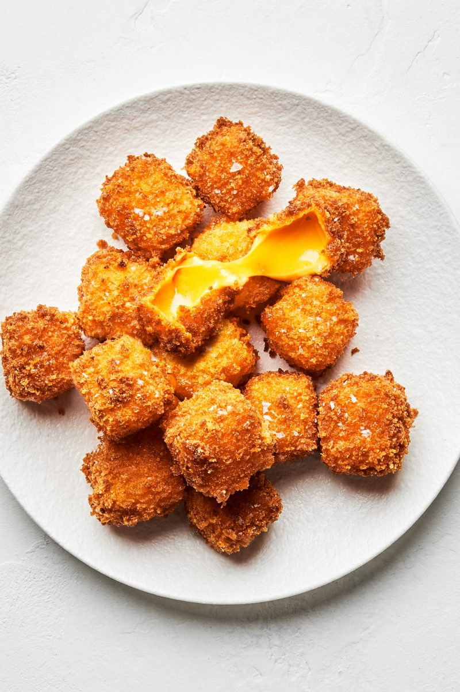

Fried Cheese

Fried cheese is a real triple threat–crunchy, comforting, and super flavorful
For this home run of a dish, we use medium yellow cheddar for its excellent melting point.
You’ll be sure to have a crunchy, toasted exterior, and a fun cheesy pull with this fried cheese bites recipe.
We’d also like to recommend making this fried cheese recipe for a snack sometime
we guarantee you’ll get some smiles out of your audience!
Ingredients
- 1 cup flour
- 1 teaspoon sea salt
- 1/2 teaspoon freshly cracked pepper
- 1/2 teaspoon garlic powder
- 2 eggs
- 2 cups panko
- 1 pound medium yellow cheddar
- 1 quart vegetable oil
Step by step:
- Prepare a small baking sheet or plate with parchment paper. In a small bowl mix together the flour, salt, pepper and garlic powder. To a second bowl add the eggs and beat until smooth. To a third bowl add the panko.
- Cut the cheese into 1-inch pieces. Working with one piece at a time, dip the cheese into the flour mixture, shaking off any excess. Next dip it into the egg mixture, coating all sides, letting the excess drip off. Lastly, gently press the cheese into the panko until coated on all sides. Transfer the cheese to the baking sheet and repeat with remaining cheese. Place in the freezer for 30 minutes.
- Line a plate with a paper towel, set aside. In a large pot and using a deep fry thermometer, bring 1 quart of oil to 375°F over medium-high heat. Remove the cheese from the freezer. Working in small batches gently lower the prepared cheese into the hot oil. Cook until golden brown, about 3 minutes. Using a metal straining spoon, transfer the cheese to the paper towel lined plate. Continue with remaining cheese.
- Let cool slightly. Serve warm.